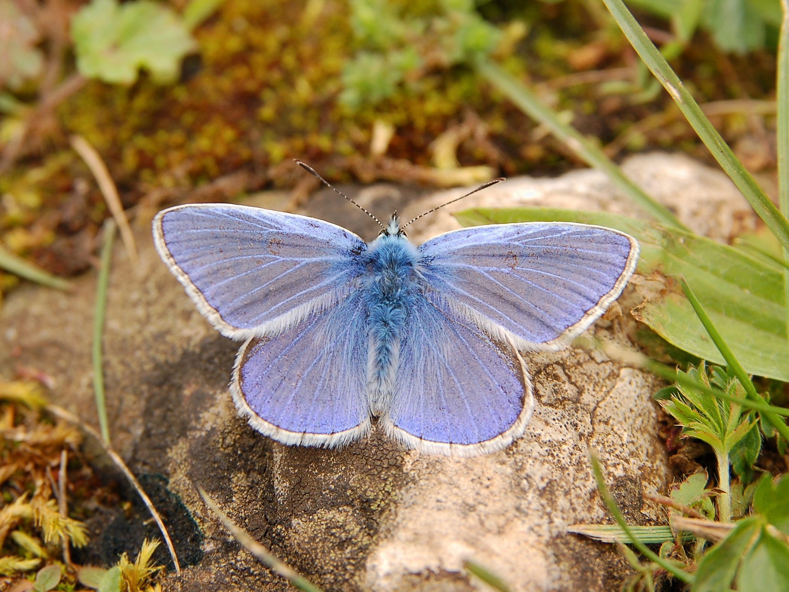
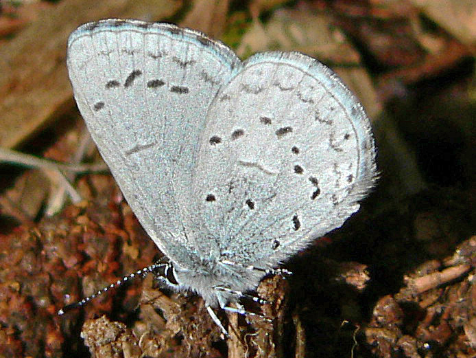

Голубя́нки (лат. Lycaenidae; устаревшее название — Cupidinidae) — семейство дневных бабочек. Насчитывает более 5200 видов в мировой фауне, распространённых преимущественно в тропиках, из них около 450—500 — в умеренном поясе северного полушария.
Бабочки обычно небольшие, с хорошо выраженным половым диморфизмом, особенно в окраске крыльев — самцы окрашены в более яркие тона. Размах крыльев большинства видов семейства 20—40 мм, у тропических видов максимум до 60 мм (например Thecla coronata). Крылья широкие. Иногда задние крылья обладают тонким коротким «хвостиком» (у хвостаток).
Обычно окраска верхней стороны крыльев самок тёмно-бурая с желтоватыми или оранжевыми пятнышками в их краевой части. Отличия самцов от самок заключаются в том, что желтоватые пятна у них сокращаются или исчезают (хвостатка падубовая, большинство червонцев, зефир берёзовый). Крылья становятся или одноцветно бурыми, или на них более-менее ярко проступает синий (Lycaena) или огненно-красный фон (Cupido). Голубая или огненная окраска у самок выражена слабее, чем у самцов тех же видов, тёмных элементов рисунка сохраняется больше, в частности сильнее выражен рисунок, соответствующий глазкам нижней стороны. Снизу окраска крыльев буроватая или сероватая.
Для многих видов Lycaena и Cupido характерен глазчатый рисунок на нижней стороне крыльев. Такой рисунок мы можем наблюдать у голубянки икар. Он состоит из двойного ряда чёрных пятнышек вдоль края, разделённых оранжевой каёмкой, обыкновенно распадающейся на отдельные оранжевые луночки; из ряда глазков в светлых ободках, проходящих поперёк передних и задних крыльев на половине расстояния между краем и концом средней ячейки; из точек и чёрточек на поперечных жилках каждого крыла и из нескольких глазков на прикорневой части крыльев. У некоторых видов этот рисунок проявляется и на верхней стороне крыльев. Наиболее постоянным элементом являются краевые пятна и наиболее полно этот рисунок выражен у самок.
У голубянок родов Thecla, Callophrys рисунок нижней стороны крыльев состоит только из поперечных полосок и пятна в виде глазков обособляются только у края задних крыльев, и то не у всех видов. Между этими типами рисунков мы можем наблюдать — правда только на юге — и связующие звенья в лице голубянка римн и голубянки гороховой. При внимательном рассмотрении рисунков крыльев голубянки гороховой и наших обычных голубянок можно заметить, что глазчатый рисунок может быть сведён к поперечно-полосатому, распадающемуся на отдельные пятнышки (при исчезновении одних элементов и небольшой перегруппировке других). У Celastrina argiolus чёрные пятнышки узкие и вытянуты в поперечном направлении, этим указывая на своё происхождение от разорвавшейся на мелкие чёрточки поперечной линии.
,_ventral.jpg)
Эволюционное изменение рисунка крыльев голубянок можно проследить при сравнении отдельных видов и изучении индивидуальной изменчивости в пределах одного вида. Эти изменения сводятся к исчезновению глазков в прикорневой области и постепенному недоразвитию краевого рисунка, начиная с передних крыльев и заканчивая задним углом задних крыльев. Например, у отдельных особей голубянки икар прикорневые точки могут совсем исчезнуть. Дальнейшее изменение рисунка заключается либо в полном исчезновении глазков, либо в их разрастании и слиянии в продольном направлении, вдоль жилок крыла. Так, у «слепой» формы голубянки лесной глазки исчезают вовсе. В простых случая глазки принимают клинообразную форму или, сопровождаясь добавочными точками, получают форму восклицательных знаков. Наблюдается также слияние пятнышек, расположенных в одной ячейке. Наиболее часто наблюдается слияние глазков I ячейки передних крыльев, и из них формируется изогнутая чёрная полоска в виде лежащей скобки. Такое изменение можно встретить среди осеннего поколения голубянки икар. В крайних случаях с глазками сливаются и элементы краевого рисунка, и пятнышки на поперечных жилках, образуя «пальчатый», «лучевой» рисунок. Такой рисунок возникает в опытах в крайних условиях и в природе может возникнуть при необычных метеорологических условиях.
Глаза волосатые, реже голые, овальные с выемкой у основания усиков и окаймлением из белых чешуек. Усики булавовидные. Щупики короткие. Основания усиков без волосистых кисточек. Плечевой жилки нет. Передние ноги короче средних и задних, обычно несегментированные, с одним коготком. Задние голени с одной парой шпор или без неё. Передние ноги самцов слегка недоразвиты (лапки без сегментации), не функционируют при хождении, но в покое не прижаты к телу. Все ноги самок развиты нормально.
Гусеницы голубянок мокрицевидные, короткие, плоские снизу, с сильно выпуклой спиной и очень маленькой головкой. Их длина не превышает 15—20 мм. Они живут на различных породах деревьев и кустарников (хвостатки), травянистых гречишных (многоглазки) или же на бобовых. Гусеницы голубянок ведут одиночный и скрытный образ жизни, они остаются малозаметными на листьях кормовых растений, чему способствует их форма и окраска тела со штриховкой, напоминающей жилки листьев. Многие факультативно или облигатно питаются тлями, червецами и другими равнокрылыми, нередко склонны к каннибализму. Ряд видов — симбионты муравьёв. Их гусеницы живут на растениях вблизи муравейников, а куколки покоятся в гнёздах муравьёв.
Короткие толстые куколки у одних форм прикрепляются к листьям и веткам и придерживаются при помощи паутинистого пояска, у других покоятся в земле в паутинистом плетении. Куколка хвостатки сливовой имеет охранительное свойство, делающее её похожей на птичий помёт. Куколка дубовой хвостатки, будучи потревоженной, издаёт скрипящие звуки. Куколка червонца голубоватого напоминает несъедобные куколки божьих коровок.
У ряда видов гусеницы живут в муравейниках, находясь с муравьями в симбиотических отношениях, например, с родом Myrmica. Примерно половина всех видов голубянок (Lycaenidae) связаны в своём цикле развития с муравьями. Голубянки образуют с муравьями отношения от факультативных до облигатных и от мутуализма до паразитизма[6]. Гусеницы и куколки голубянок выработали комплекс химических (лихневмоны) и акустических сигналов для контролирования поведения муравьёв. Гусеницы голубянок также выделяют из дорзальной нектароносной железы сладкую жидкость, привлекательную для муравьёв. Муравьи, ощупывая этот орган усиками, вызывают выделение жидкости, вероятно, содержащей феромоны лихневмоны, обусловливающие поведение муравьёв. Некоторые гусеницы голубянок и риодинид имеют ещё и звукоиздающие органы, регулирующие поведение муравьёв. Одни виды мирмекофильных голубянок имеет только шаровую щетинку на теле гусеницы, другие — вместе с звуковой ресничкой, при отсутствии нектароносной железы.
Все виды мирмекофильных голубянок приурочены к луговым муравейникам. Одним из таких видов является голубянка алькон (Phengaris alcon), самки которой откладывают яйца на цветы горечавки лёгочной (Gentiana pneumonanthe). Гусеницы живут внутри цветка две-три недели, прогрызают отверстие и выбираются наружу, после чего спускаются на землю на шелковой нити. Оказавшись на земле, они ждут, пока их найдут рабочие особи муравьёв из рода Myrmica и отнесут к себе в муравейник. В гнезде муравьёв гусеницы поедают личинок и куколок муравьёв, оставаясь зимовать. В июне гусеницы окукливаются, оставаясь внутри муравейника. Через месяц из куколки выходит бабочка, которая выбирается из гнезда.
Большинство видов голубянок из рода Phengaris развиваются в гнёздах лишь одного вида муравьёв, но гусеницы голубянки алькон обитают в гнёздах муравьёв различных видов на разных участках своего ареала.